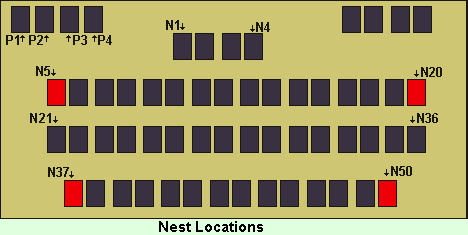
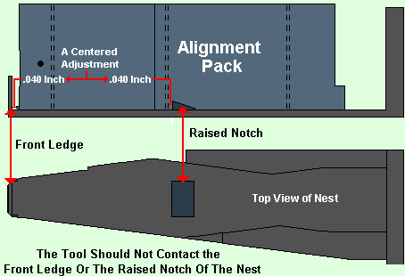

Adjusting Reagent Gripper Y-axis
This procedure describes how to adjust the reagent gripper in the y-axis by removing or adding shims between the z-carriage and the gripper body. This procedure should only be used on the one piece gripper mounting block design.
- Reagent pack alignment tool (blue)
- Metric allen wrenches
- Gripper shims (if adjustments are necessary). Refer to parts list for part number.
This document provides instructions for removing or adding shims to align the reagent gripper in the y-axis.
- The gripper mounting block was switched from a one piece to 2 piece design on DxI serial numbers 606147 and 901603 and above.
- The 2 piece gripper mounting block can be identified by the 3 screws which secure the block to the Z carriage. They are visible from the front of the instrument.

Engineering design allows for a 0.080 inch of pack free play in the y-axis direction when a pack is sitting in a slot. A correctly operating system places a pack in the nest so that it is roughly centered in the middle of the free play area. Refer to reference drawing.
This is accomplished by manually adding or removing 0.010-inch thick shims between the z-carriage and the gripper body. If all parts of the module are perfect, then three shims are required. This procedure was completed in instrument manufacturing. Also perform this procedure when a gripper is replaced or when troubleshooting motion errors.
In this document the term slot and nest are used interchangeably and both refer to the same item.


-
Open the SPU.
-
Loosen the locking screw.
The locking screw prevents the SPU from swinging outward from the instrument. It is not necessary to remove the screw because the SPU plate is slotted.

-
(For China and Canada Only.) On the front facing the edge of the Framus assembly, install the Chinese and French labels adjacent to the existing English label.
Note: The labels are in the DxI Installation Kit.

-
Loosen the locking screw.
-
Close the SPU.
The SPU is hinged on the left side. The right side is released and can be swung out from the instrument to approximately 45 degrees.Warning: The SPU off-load area slides forward and rearward as the SPU is swung in and out. To prevent damage to the SPU or the off-load area, confirm that nothing obstructs the movement of the off-load area as the SPU is moved.
-
Tighten the bolt that holds the SPU from swinging outward from the instrument (locking screw).

-
Tighten the bolt that holds the SPU from swinging outward from the instrument (locking screw).